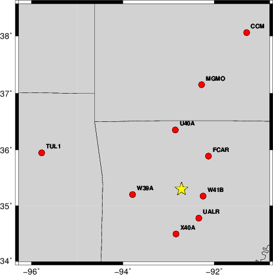
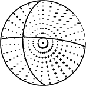
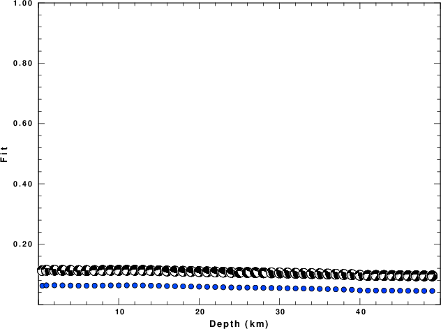
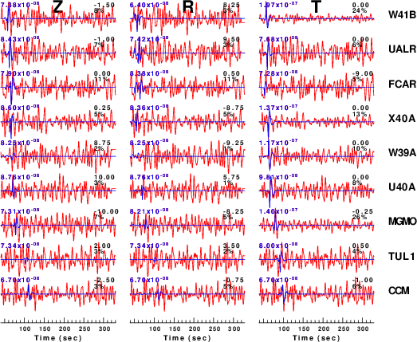
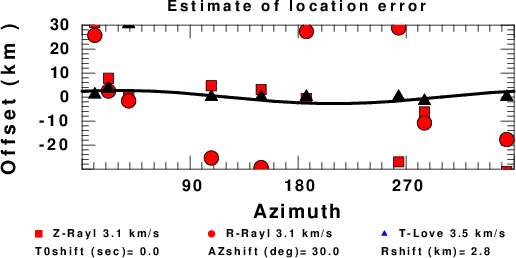

The focal mechanism was determined using broadband seismic waveforms. The location of the event and the and stations used for the waveform inversion are shown in the next figure.
|  |
|
|
The program wvfgrd96 was used with good traces observed at short distance to determine the focal mechanism, depth and seismic moment. This technique requires a high quality signal and well determined velocity model for the Green functions. To the extent that these are the quality data, this type of mechanism should be preferred over the radiation pattern technique which requires the separate step of defining the pressure and tension quadrants and the correct strike.
The observed and predicted traces are filtered using the following gsac commands:
hp c 0.02 n 3 lp c 0.10 n 3The results of this grid search from 0.5 to 19 km depth are as follow:
DEPTH STK DIP RAKE MW FIT
WVFGRD96 0.5 275 55 20 3.04 0.0625
WVFGRD96 1.0 275 60 25 3.06 0.0637
WVFGRD96 2.0 275 80 40 3.09 0.0639
WVFGRD96 3.0 90 80 -30 3.08 0.0635
WVFGRD96 4.0 90 80 -30 3.08 0.0631
WVFGRD96 5.0 90 85 -30 3.09 0.0625
WVFGRD96 6.0 95 90 -30 3.09 0.0626
WVFGRD96 7.0 265 70 -35 3.09 0.0626
WVFGRD96 8.0 265 70 -35 3.10 0.0631
WVFGRD96 9.0 265 65 -35 3.11 0.0635
WVFGRD96 10.0 265 65 -35 3.13 0.0635
WVFGRD96 11.0 265 65 -35 3.14 0.0637
WVFGRD96 12.0 265 65 -35 3.14 0.0636
WVFGRD96 13.0 265 65 -35 3.15 0.0634
WVFGRD96 14.0 265 65 -35 3.16 0.0628
WVFGRD96 15.0 265 65 -35 3.16 0.0622
WVFGRD96 16.0 105 65 40 3.16 0.0614
WVFGRD96 17.0 105 65 40 3.17 0.0609
WVFGRD96 18.0 105 65 40 3.18 0.0604
WVFGRD96 19.0 105 65 40 3.19 0.0599
WVFGRD96 20.0 105 65 45 3.21 0.0594
WVFGRD96 21.0 110 65 50 3.22 0.0588
WVFGRD96 22.0 110 65 50 3.23 0.0582
WVFGRD96 23.0 110 65 50 3.23 0.0575
WVFGRD96 24.0 110 60 50 3.24 0.0567
WVFGRD96 25.0 155 55 -40 3.28 0.0564
WVFGRD96 26.0 160 50 -55 3.30 0.0564
WVFGRD96 27.0 160 50 -55 3.31 0.0560
WVFGRD96 28.0 160 50 -55 3.31 0.0553
WVFGRD96 29.0 300 55 60 3.32 0.0550
WVFGRD96 30.0 300 55 60 3.33 0.0547
WVFGRD96 31.0 300 55 60 3.33 0.0542
WVFGRD96 32.0 295 60 50 3.33 0.0536
WVFGRD96 33.0 295 55 50 3.34 0.0531
WVFGRD96 34.0 295 55 50 3.34 0.0526
WVFGRD96 35.0 295 55 50 3.35 0.0520
WVFGRD96 36.0 290 55 45 3.35 0.0514
WVFGRD96 37.0 290 55 45 3.36 0.0507
WVFGRD96 38.0 290 55 45 3.37 0.0497
WVFGRD96 39.0 285 55 35 3.37 0.0491
WVFGRD96 40.0 280 45 30 3.42 0.0470
WVFGRD96 41.0 275 50 -30 3.39 0.0464
WVFGRD96 42.0 275 55 -30 3.40 0.0465
WVFGRD96 43.0 275 55 -30 3.40 0.0464
WVFGRD96 44.0 275 55 -30 3.41 0.0462
WVFGRD96 45.0 275 55 -30 3.42 0.0460
WVFGRD96 46.0 275 55 -30 3.43 0.0456
WVFGRD96 47.0 275 55 -30 3.43 0.0454
WVFGRD96 48.0 275 55 -30 3.44 0.0452
WVFGRD96 49.0 275 55 -35 3.44 0.0451
The best solution is
WVFGRD96 2.0 275 80 40 3.09 0.0639
The mechanism correspond to the best fit is
|  |
|
|
The best fit as a function of depth is given in the following figure:
|  |
|
|
The comparison of the observed and predicted waveforms is given in the next figure. The red traces are the observed and the blue are the predicted. Each observed-predicted component is plotted to the same scale and peak amplitudes are indicated by the numbers to the left of each trace. A pair of numbers is given in black at the right of each predicted traces. The upper number it the time shift required for maximum correlation between the observed and predicted traces. This time shift is required because the synthetics are not computed at exactly the same distance as the observed and because the velocity model used in the predictions may not be perfect. A positive time shift indicates that the prediction is too fast and should be delayed to match the observed trace (shift to the right in this figure). A negative value indicates that the prediction is too slow. The lower number gives the percentage of variance reduction to characterize the individual goodness of fit (100% indicates a perfect fit).
The bandpass filter used in the processing and for the display was
hp c 0.02 n 3 lp c 0.10 n 3
|  |
|
|
|
|
| Focal mechanism sensitivity at the preferred depth. The red color indicates a very good fit to thewavefroms. Each solution is plotted as a vector at a given value of strike and dip with the angle of the vector representing the rake angle, measured, with respect to the upward vertical (N) in the figure. |
A check on the assumed source location is possible by looking at the time shifts between the observed and predicted traces. The time shifts for waveform matching arise for several reasons:
Time_shift = A + B cos Azimuth + C Sin Azimuth
The time shifts for this inversion lead to the next figure:

The derived shift in origin time and epicentral coordinates are given at the bottom of the figure.